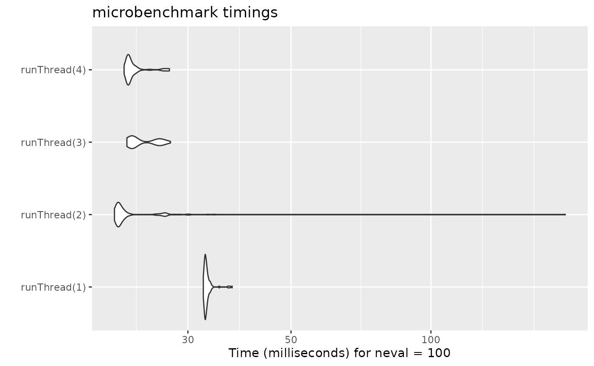

A note about the speed of the functional form for rxode2
The functional form has the benefit that it is what is supported by nlmixr2 and therefore there is only one interface between solving and estimating, and it takes some computation time to get to the underlying “classic” simulation code.
These models are in the form of:
library(rxode2)
#> rxode2 5.0.1.9000 using 2 threads (see ?getRxThreads)
#> no cache: create with `rxCreateCache()`
mod1 <- function() {
ini({
KA <- 0.3
CL <- 7
V2 <- 40
Q <- 10
V3 <- 300
Kin <- 0.2
Kout <- 0.2
EC50 <- 8
})
model({
C2 = centr/V2
C3 = peri/V3
d/dt(depot) = -KA*depot
d/dt(centr) = KA*depot - CL*C2 - Q*C2 + Q*C3
d/dt(peri) = Q*C2 - Q*C3
d/dt(eff) = Kin - Kout*(1-C2/(EC50+C2))*eff
eff(0) = 1
})
}Or you can also specify the end-points for simulation/estimation just
like nlmixr2:
mod2f <- function() {
ini({
TKA <- 0.3
TCL <- 7
TV2 <- 40
TQ <- 10
TV3 <- 300
TKin <- 0.2
TKout <- 0.2
TEC50 <- 8
eta.cl + eta.v ~ c(0.09,
0.08, 0.25)
c2.prop.sd <- 0.1
eff.add.sd <- 0.1
})
model({
KA <- TKA
CL <- TCL*exp(eta.cl)
V2 <- TV2*exp(eta.v)
Q <- TQ
V3 <- TV3
Kin <- TKin
Kout <- TKout
EC50 <- TEC50
C2 = centr/V2
C3 = peri/V3
d/dt(depot) = -KA*depot
d/dt(centr) = KA*depot - CL*C2 - Q*C2 + Q*C3
d/dt(peri) = Q*C2 - Q*C3
d/dt(eff) = Kin - Kout*(1-C2/(EC50+C2))*eff
eff(0) = 1
C2 ~ prop(c2.prop.sd)
eff ~ add(eff.add.sd)
})
}For every solve, there is a compile (or a cached compile) of the
underlying model. If you wish to speed this process up you can use the
two underlying rxode2 classic models. This takes two
steps:
Parsing/evaluating the model
Creating the simulation model
The first step can be done by rxode2(mod1) or
mod1() (or for the second model too).
mod1 <- mod1()
mod2f <- rxode2(mod2f)
#> ℹ parameter labels from comments are typically ignored in non-interactive mode
#> ℹ Need to run with the source intact to parse commentsThe second step is to create the underlying “classic”
rxode2 model, which can be done with two different
methods:$simulationModel and
$simulationIniModel. The $simulationModel will
provide the simulation code without the initial conditions pre-pended,
the $simulationIniModel will pre-pend the values. When the
endpoints are specified, the simulation code for each endpoint is also
output. You can see the differences below:
summary(mod1$simulationModel)
#> rxode2 5.0.1.9000 model named rx_5f6f9bffa1cafee704f8082d85523d9a model (✔ ready).
#> DLL: /tmp/RtmpnLBzEe/rxode2/rx_5f6f9bffa1cafee704f8082d85523d9a__.rxd/rx_5f6f9bffa1cafee704f8082d85523d9a_.so
#> NULL
#>
#> Calculated Variables:
#> [1] "C2" "C3"
#> ── rxode2 Model Syntax ──
#> rxode2({
#> param(KA, CL, V2, Q, V3, Kin, Kout, EC50)
#> C2 = centr/V2
#> C3 = peri/V3
#> d/dt(depot) = -KA * depot
#> d/dt(centr) = KA * depot - CL * C2 - Q * C2 + Q * C3
#> d/dt(peri) = Q * C2 - Q * C3
#> d/dt(eff) = Kin - Kout * (1 - C2/(EC50 + C2)) * eff
#> eff(0) = 1
#> })
summary(mod1$simulationIniModel)
#> rxode2 5.0.1.9000 model named rx_1befdc058ab5e5bd878aed0a284f2f16 model (✔ ready).
#> DLL: /tmp/RtmpnLBzEe/rxode2/rx_1befdc058ab5e5bd878aed0a284f2f16__.rxd/rx_1befdc058ab5e5bd878aed0a284f2f16_.so
#> NULL
#>
#> Calculated Variables:
#> [1] "C2" "C3"
#> ── rxode2 Model Syntax ──
#> rxode2({
#> param(KA, CL, V2, Q, V3, Kin, Kout, EC50)
#> KA = 0.3
#> CL = 7
#> V2 = 40
#> Q = 10
#> V3 = 300
#> Kin = 0.2
#> Kout = 0.2
#> EC50 = 8
#> C2 = centr/V2
#> C3 = peri/V3
#> d/dt(depot) = -KA * depot
#> d/dt(centr) = KA * depot - CL * C2 - Q * C2 + Q * C3
#> d/dt(peri) = Q * C2 - Q * C3
#> d/dt(eff) = Kin - Kout * (1 - C2/(EC50 + C2)) * eff
#> eff(0) = 1
#> })
summary(mod2f$simulationModel)
#> rxode2 5.0.1.9000 model named rx_dc935a8ab94760a6b875705190d40221 model (✔ ready).
#> DLL: /tmp/RtmpnLBzEe/rxode2/rx_dc935a8ab94760a6b875705190d40221__.rxd/rx_dc935a8ab94760a6b875705190d40221_.so
#> NULL
#>
#> Calculated Variables:
#> [1] "KA" "CL" "V2" "Q" "V3" "Kin"
#> [7] "Kout" "EC50" "C2" "C3" "ipredSim" "sim"
#> ── rxode2 Model Syntax ──
#> rxode2({
#> param(TKA, TCL, TV2, TQ, TV3, TKin, TKout, TEC50, c2.prop.sd,
#> eff.add.sd, eta.cl, eta.v)
#> KA = TKA
#> CL = TCL * exp(eta.cl)
#> V2 = TV2 * exp(eta.v)
#> Q = TQ
#> V3 = TV3
#> Kin = TKin
#> Kout = TKout
#> EC50 = TEC50
#> C2 = centr/V2
#> C3 = peri/V3
#> d/dt(depot) = -KA * depot
#> d/dt(centr) = KA * depot - CL * C2 - Q * C2 + Q * C3
#> d/dt(peri) = Q * C2 - Q * C3
#> d/dt(eff) = Kin - Kout * (1 - C2/(EC50 + C2)) * eff
#> eff(0) = 1
#> if (CMT == 5) {
#> rx_yj_ ~ 2
#> rx_lambda_ ~ 1
#> rx_low_ ~ 0
#> rx_hi_ ~ 1
#> rx_pred_f_ ~ C2
#> rx_pred_ ~ rx_pred_f_
#> rx_r_ ~ (rx_pred_f_ * c2.prop.sd)^2
#> ipredSim = rxTBSi(rx_pred_, rx_lambda_, rx_yj_, rx_low_,
#> rx_hi_)
#> sim = rxTBSi(rx_pred_ + sqrt(rx_r_) * rxerr.C2, rx_lambda_,
#> rx_yj_, rx_low_, rx_hi_)
#> }
#> if (CMT == 4) {
#> rx_yj_ ~ 2
#> rx_lambda_ ~ 1
#> rx_low_ ~ 0
#> rx_hi_ ~ 1
#> rx_pred_f_ ~ eff
#> rx_pred_ ~ rx_pred_f_
#> rx_r_ ~ (eff.add.sd)^2
#> ipredSim = rxTBSi(rx_pred_, rx_lambda_, rx_yj_, rx_low_,
#> rx_hi_)
#> sim = rxTBSi(rx_pred_ + sqrt(rx_r_) * rxerr.eff, rx_lambda_,
#> rx_yj_, rx_low_, rx_hi_)
#> }
#> cmt(C2)
#> dvid(5, 4)
#> })
summary(mod2f$simulationIniModel)
#> rxode2 5.0.1.9000 model named rx_5e2b3054279e7ff3ab0d8e9589a76904 model (✔ ready).
#> DLL: /tmp/RtmpnLBzEe/rxode2/rx_5e2b3054279e7ff3ab0d8e9589a76904__.rxd/rx_5e2b3054279e7ff3ab0d8e9589a76904_.so
#> NULL
#>
#> Calculated Variables:
#> [1] "KA" "CL" "V2" "Q" "V3" "Kin"
#> [7] "Kout" "EC50" "C2" "C3" "ipredSim" "sim"
#> ── rxode2 Model Syntax ──
#> rxode2({
#> param(TKA, TCL, TV2, TQ, TV3, TKin, TKout, TEC50, c2.prop.sd,
#> eff.add.sd, eta.cl, eta.v)
#> rxerr.C2 = 1
#> rxerr.eff = 1
#> TKA = 0.3
#> TCL = 7
#> TV2 = 40
#> TQ = 10
#> TV3 = 300
#> TKin = 0.2
#> TKout = 0.2
#> TEC50 = 8
#> c2.prop.sd = 0.1
#> eff.add.sd = 0.1
#> eta.cl = 0
#> eta.v = 0
#> KA = TKA
#> CL = TCL * exp(eta.cl)
#> V2 = TV2 * exp(eta.v)
#> Q = TQ
#> V3 = TV3
#> Kin = TKin
#> Kout = TKout
#> EC50 = TEC50
#> C2 = centr/V2
#> C3 = peri/V3
#> d/dt(depot) = -KA * depot
#> d/dt(centr) = KA * depot - CL * C2 - Q * C2 + Q * C3
#> d/dt(peri) = Q * C2 - Q * C3
#> d/dt(eff) = Kin - Kout * (1 - C2/(EC50 + C2)) * eff
#> eff(0) = 1
#> if (CMT == 5) {
#> rx_yj_ ~ 2
#> rx_lambda_ ~ 1
#> rx_low_ ~ 0
#> rx_hi_ ~ 1
#> rx_pred_f_ ~ C2
#> rx_pred_ ~ rx_pred_f_
#> rx_r_ ~ (rx_pred_f_ * c2.prop.sd)^2
#> ipredSim = rxTBSi(rx_pred_, rx_lambda_, rx_yj_, rx_low_,
#> rx_hi_)
#> sim = rxTBSi(rx_pred_ + sqrt(rx_r_) * rxerr.C2, rx_lambda_,
#> rx_yj_, rx_low_, rx_hi_)
#> }
#> if (CMT == 4) {
#> rx_yj_ ~ 2
#> rx_lambda_ ~ 1
#> rx_low_ ~ 0
#> rx_hi_ ~ 1
#> rx_pred_f_ ~ eff
#> rx_pred_ ~ rx_pred_f_
#> rx_r_ ~ (eff.add.sd)^2
#> ipredSim = rxTBSi(rx_pred_, rx_lambda_, rx_yj_, rx_low_,
#> rx_hi_)
#> sim = rxTBSi(rx_pred_ + sqrt(rx_r_) * rxerr.eff, rx_lambda_,
#> rx_yj_, rx_low_, rx_hi_)
#> }
#> cmt(C2)
#> dvid(5, 4)
#> })If you wish to speed up multiple simualtions from the
rxode2 functions, you need to pre-calculate care of the
steps above:
mod1 <- mod1$simulationModel
mod2 <- mod2f$simulationModelThese functions then can act like a normal ui model to be solved. You
can convert them back to a UI as.rxUi() or a function
as.function() as needed.
To increase speed for multiple simulations from the same model you
should use the lower level simulation model (ie
$simulationModel or $simulationIniModel
depending on what you need)
Increasing rxode2 speed by multi-subject parallel solving
Using the classic rxode2 model specification (which we
can convert from a functional/ui model style) we will continue the
discussion on rxode2 speed enhancements.
rxode2 originally developed as an ODE solver that
allowed an ODE solve for a single subject. This flexibility is still
supported.
The original code from the rxode2 tutorial is below:
library(rxode2)
library(microbenchmark)
library(ggplot2)
mod1 <- rxode2({
C2 = centr/V2
C3 = peri/V3
d/dt(depot) = -KA*depot
d/dt(centr) = KA*depot - CL*C2 - Q*C2 + Q*C3
d/dt(peri) = Q*C2 - Q*C3
d/dt(eff) = Kin - Kout*(1-C2/(EC50+C2))*eff
eff(0) = 1
})
## Create an event table
ev <- et() |>
et(amt=10000, addl=9,ii=12) |>
et(time=120, amt=20000, addl=4, ii=24) |>
et(0:240) ## Add Sampling
nsub <- 100 # 100 sub-problems
sigma <- matrix(c(0.09,0.08,0.08,0.25),2,2) # IIV covariance matrix
mv <- rxRmvn(n=nsub, rep(0,2), sigma) # Sample from covariance matrix
CL <- 7*exp(mv[,1])
V2 <- 40*exp(mv[,2])
params.all <- cbind(KA=0.3, CL=CL, V2=V2, Q=10, V3=300,
Kin=0.2, Kout=0.2, EC50=8)For Loop
The slowest way to code this is to use a for loop. In
this example we will enclose it in a function to compare timing.
Running with apply
In general for R, the apply types of functions perform
better than a for loop, so the tutorial also suggests this
speed enhancement
runSapply <- function(){
res <- apply(params.all, 1, function(theta)
mod1$run(theta, ev)[, "eff"])
}Run using a single-threaded solve
You can also have rxode2 solve all the subject simultaneously without collecting the results in R, using a single threaded solve.
The data output is slightly different here, but still gives the same information:
Run a 2 threaded solve
rxode2 supports multi-threaded solves, so another option is to have
2 threads (called cores in the solve options,
you can see the options in rxControl() or
rxSolve()).
Compare the times between all the methods
Now the moment of truth, the timings:
bench <- microbenchmark(runFor(), runSapply(), runSingleThread(),run2Thread())
print(bench)
#> Unit: milliseconds
#> expr min lq mean median uq max
#> runFor() 434.79949 442.05745 448.70710 444.88310 447.84103 600.92708
#> runSapply() 436.21765 443.14319 451.03638 447.38316 450.08590 629.23923
#> runSingleThread() 36.90931 37.32654 38.04211 37.65032 38.26562 43.04233
#> run2Thread() 23.65291 24.15850 24.74721 24.49409 25.00260 30.12082
#> neval
#> 100
#> 100
#> 100
#> 100
autoplot(bench)
#> Warning: `aes_string()` was deprecated in ggplot2 3.0.0.
#> ℹ Please use tidy evaluation idioms with `aes()`.
#> ℹ See also `vignette("ggplot2-in-packages")` for more information.
#> ℹ The deprecated feature was likely used in the microbenchmark package.
#> Please report the issue at
#> <https://github.com/joshuaulrich/microbenchmark/issues/>.
#> This warning is displayed once every 8 hours.
#> Call `lifecycle::last_lifecycle_warnings()` to see where this warning was
#> generated.
It is clear that the largest jump in performance
when using the solve method and providing all the
parameters to rxode2 to solve without looping over each subject with
either a for or a sapply. The number of
cores/threads applied to the solve also plays a role in the solving.
We can explore the number of threads further with the following code:
runThread <- function(n){
solve(mod1, params.all, ev, cores=n)[,c("sim.id", "time", "eff")]
}
bench <- eval(parse(text=sprintf("microbenchmark(%s)",
paste(paste0("runThread(", seq(1, 2 * rxCores()),")"),
collapse=","))))
print(bench)
#> Unit: milliseconds
#> expr min lq mean median uq max neval
#> runThread(1) 37.08507 37.62803 38.17937 37.87664 38.28721 42.92213 100
#> runThread(2) 23.89866 24.53717 25.95936 24.93756 25.53131 37.09831 100
#> runThread(3) 25.48594 26.22422 27.90241 26.85713 29.69100 33.97072 100
#> runThread(4) 25.21326 25.67140 26.19662 25.90523 26.37722 30.68742 100
autoplot(bench)
There can be a suite spot in speed vs number or cores. The system type (mac, linux, windows and/or processor), complexity of the ODE solving and the number of subjects may affect this arbitrary number of threads. 4 threads is a good number to use without any prior knowledge because most systems these days have at least 4 threads (or 2 processors with 4 threads).
Increasing speed with compiler options
One of the way that allows faster ODE solving is to make some
approximations that make some math operators like exp()
faster but not technically accurate enough to follow the IEEE standard
for the math functions values (there are other implications that I will
not cover here).
While these are optimizations are opt-in for Julia since they compile everything each session, CRAN has a more conservative approach since individuals do not compile each R function before running it.
Still, rxode2 models can be compiled with this option
without disturbing CRAN policies. The key is to set an option. Here is
an example:
# Using the first example subset to PK
mod2f <- function() {
ini({
TKA <- 0.3
TCL <- 7
TV2 <- 40
TQ <- 10
TV3 <- 300
TKin <- 0.2
TKout <- 0.2
TEC50 <- 8
eta.cl + eta.v ~ c(0.09,
0.08, 0.25)
c2.prop.sd <- 0.1
})
model({
KA <- TKA
CL <- TCL*exp(eta.cl)
V2 <- TV2*exp(eta.v)
Q <- TQ
V3 <- TV3
Kin <- TKin
Kout <- TKout
EC50 <- TEC50
C2 = centr/V2
C3 = peri/V3
d/dt(depot) = -KA*depot
d/dt(centr) = KA*depot - CL*C2 - Q*C2 + Q*C3
d/dt(peri) = Q*C2 - Q*C3
C2 ~ prop(c2.prop.sd)
})
}
mod2f <- mod2f()
mod2s <- mod2f$simulationIniModel
ev <- et(amountUnits="mg", timeUnits="hours") |>
et(amt=10000, addl=9,ii=12,cmt="depot") |>
et(time=120, amt=2000, addl=4, ii=14, cmt="depot") |>
et(0:240) # Add sampling
bench1 <- microbenchmark(standardCompile=rxSolve(mod2s, ev, nSub=1000))
# Now clear the cache of models so we can change the compile options for the same model
rxClean()
# Use withr to preserve the options
withr::with_options(list(rxode2.compile.O="fast"), {
mod2s <- mod2f$simulationIniModel
})
bench2 <- microbenchmark(fastCompile=rxSolve(mod2s, ev, nSub=1000))
bench <- rbind(bench1, bench2)
print(bench)
#> Unit: milliseconds
#> expr min lq mean median uq max neval
#> standardCompile 390.0097 399.5505 484.3826 486.2245 568.5475 597.5808 100
#> fastCompile 388.7150 396.0264 488.1106 414.9734 580.2813 738.0748 100
autoplot(bench)
Note compiler settings can be tricky and if you setup your system
wide Makevars it may interact with this setting. For
example if you use ccache the compile may not be produced
with the same options since it was cached with the other options.
For example, on the github runner (which generates this page), there
is no advantage to the "fast" compile. However, on my
development laptop there is some
minimal speed increase. You should probably check before using this
yourself.
This is disabled by default since there is only minimum increase in speed.
A real life example
cBefore some of the parallel solving was implemented, the fastest way
to run rxode2 was with lapply. This is how Rik
Schoemaker created the data-set for nlmixr comparisons, but
reduced to run faster automatic building of the pkgdown website.
library(rxode2)
library(data.table)
#Define the rxode2 model
ode1 <- "
d/dt(abs) = -KA*abs;
d/dt(centr) = KA*abs-(CL/V)*centr;
C2=centr/V;
"
#Create the rxode2 simulation object
mod1 <- rxode2(model = ode1)
#Population parameter values on log-scale
paramsl <- c(CL = log(4),
V = log(70),
KA = log(1))
#make 10,000 subjects to sample from:
nsubg <- 300 # subjects per dose
doses <- c(10, 30, 60, 120)
nsub <- nsubg * length(doses)
#IIV of 30% for each parameter
omega <- diag(c(0.09, 0.09, 0.09))# IIV covariance matrix
sigma <- 0.2
#Sample from the multivariate normal
set.seed(98176247)
rxSetSeed(98176247)
library(MASS)
mv <-
mvrnorm(nsub, rep(0, dim(omega)[1]), omega) # Sample from covariance matrix
#Combine population parameters with IIV
params.all <-
data.table(
"ID" = seq(1:nsub),
"CL" = exp(paramsl['CL'] + mv[, 1]),
"V" = exp(paramsl['V'] + mv[, 2]),
"KA" = exp(paramsl['KA'] + mv[, 3])
)
#set the doses (looping through the 4 doses)
params.all[, AMT := rep(100 * doses,nsubg)]
Startlapply <- Sys.time()
#Run the simulations using lapply for speed
s = lapply(1:nsub, function(i) {
#selects the parameters associated with the subject to be simulated
params <- params.all[i]
#creates an eventTable with 7 doses every 24 hours
ev <- eventTable()
ev$add.dosing(
dose = params$AMT,
nbr.doses = 1,
dosing.to = 1,
rate = NULL,
start.time = 0
)
#generates 4 random samples in a 24 hour period
ev$add.sampling(c(0, sort(round(sample(runif(600, 0, 1440), 4) / 60, 2))))
#runs the rxode2 simulation
x <- as.data.table(mod1$run(params, ev))
#merges the parameters and ID number to the simulation output
x[, names(params) := params]
})
#runs the entire sequence of 100 subjects and binds the results to the object res
res = as.data.table(do.call("rbind", s))
Stoplapply <- Sys.time()
print(Stoplapply - Startlapply)
#> Time difference of 16.56305 secsBy applying some of the new parallel solving concepts you can simply run the same simulation both with less code and faster:
rx <- rxode2({
CL = log(4)
V = log(70)
KA = log(1)
CL = exp(CL + eta.CL)
V = exp(V + eta.V)
KA = exp(KA + eta.KA)
d/dt(abs) = -KA*abs;
d/dt(centr) = KA*abs-(CL/V)*centr;
C2=centr/V;
})
omega <- lotri(eta.CL ~ 0.09,
eta.V ~ 0.09,
eta.KA ~ 0.09)
doses <- c(10, 30, 60, 120)
startParallel <- Sys.time()
ev <- do.call("rbind",
lapply(seq_along(doses), function(i){
et() |>
et(amt=doses[i]) |> # Add single dose
et(0) |> # Add 0 observation
## Generate 4 samples in 24 hour period
et(lapply(1:4, function(...){c(0, 24)})) |>
et(id=seq(1, nsubg) + (i - 1) * nsubg) |>
## Convert to data frame to skip sorting the data
## When binding the data together
as.data.frame()
}))
## To better compare, use the same output, that is data.table
res <- rxSolve(rx, ev, omega=omega, returnType="data.table")
endParallel <- Sys.time()
print(endParallel - startParallel)
#> Time difference of 0.6211731 secsYou can see a striking time difference between the two methods; A few things to keep in mind:
rxode2use the thread-safe sitmothreefryroutines for simulation ofetavalues. Therefore the results are expected to be different (also the random samples are taken in a different order which would be different)This prior simulation was run in R 3.5, which has a different random number generator so the results in this simulation will be different from the actual nlmixr comparison when using the slower simulation.
This speed comparison used
data.table.rxode2usesdata.tableinternally (when available) try to speed up sorting, so this would be different than installations wheredata.tableis not installed. You can force rxode2 to useorder()when sorting by usingforderForceBase(TRUE). In this case there is little difference between the two, though in other examplesdata.table’s presence leads to a speed increase (and less likely it could lead to a slowdown).
Want more ways to run multi-subject simulations
The version since the tutorial has even more ways to run
multi-subject simulations, including adding variability in sampling and
dosing times with et() (see rxode2
events for more information), ability to supply both an
omega and sigma matrix as well as adding as a
thetaMat to R to simulate with uncertainty in the
omega, sigma and theta matrices;
see rxode2
simulation vignette.
Session Information
The session information:
sessionInfo()
#> R version 4.5.2 (2025-10-31)
#> Platform: x86_64-pc-linux-gnu
#> Running under: Ubuntu 24.04.3 LTS
#>
#> Matrix products: default
#> BLAS: /usr/lib/x86_64-linux-gnu/openblas-pthread/libblas.so.3
#> LAPACK: /usr/lib/x86_64-linux-gnu/openblas-pthread/libopenblasp-r0.3.26.so; LAPACK version 3.12.0
#>
#> locale:
#> [1] LC_CTYPE=C.UTF-8 LC_NUMERIC=C LC_TIME=C.UTF-8
#> [4] LC_COLLATE=C.UTF-8 LC_MONETARY=C.UTF-8 LC_MESSAGES=C.UTF-8
#> [7] LC_PAPER=C.UTF-8 LC_NAME=C LC_ADDRESS=C
#> [10] LC_TELEPHONE=C LC_MEASUREMENT=C.UTF-8 LC_IDENTIFICATION=C
#>
#> time zone: UTC
#> tzcode source: system (glibc)
#>
#> attached base packages:
#> [1] stats graphics grDevices utils datasets methods base
#>
#> other attached packages:
#> [1] MASS_7.3-65 data.table_1.18.0 ggplot2_4.0.1
#> [4] microbenchmark_1.5.0 rxode2_5.0.1.9000
#>
#> loaded via a namespace (and not attached):
#> [1] sass_0.4.10 generics_0.1.4 lattice_0.22-7
#> [4] digest_0.6.39 magrittr_2.0.4 evaluate_1.0.5
#> [7] grid_4.5.2 RColorBrewer_1.1-3 fastmap_1.2.0
#> [10] lotri_1.0.2 qs2_0.1.6 jsonlite_2.0.0
#> [13] rxode2ll_2.0.13 backports_1.5.0 scales_1.4.0
#> [16] lazyeval_0.2.2 textshaping_1.0.4 jquerylib_0.1.4
#> [19] cli_3.6.5 symengine_0.2.10 crayon_1.5.3
#> [22] rlang_1.1.6 units_1.0-0 withr_3.0.2
#> [25] cachem_1.1.0 yaml_2.3.12 otel_0.2.0
#> [28] tools_4.5.2 memoise_2.0.1 checkmate_2.3.3
#> [31] dplyr_1.1.4 vctrs_0.6.5 R6_2.6.1
#> [34] lifecycle_1.0.4 fs_1.6.6 stringfish_0.17.0
#> [37] htmlwidgets_1.6.4 ragg_1.5.0 PreciseSums_0.7
#> [40] pkgconfig_2.0.3 desc_1.4.3 rex_1.2.1
#> [43] pkgdown_2.2.0 RcppParallel_5.1.11-1 bslib_0.9.0
#> [46] pillar_1.11.1 gtable_0.3.6 glue_1.8.0
#> [49] Rcpp_1.1.0 systemfonts_1.3.1 xfun_0.55
#> [52] tibble_3.3.0 tidyselect_1.2.1 sys_3.4.3
#> [55] knitr_1.51 farver_2.1.2 dparser_1.3.1-13
#> [58] htmltools_0.5.9 nlme_3.1-168 labeling_0.4.3
#> [61] rmarkdown_2.30 compiler_4.5.2 S7_0.2.1